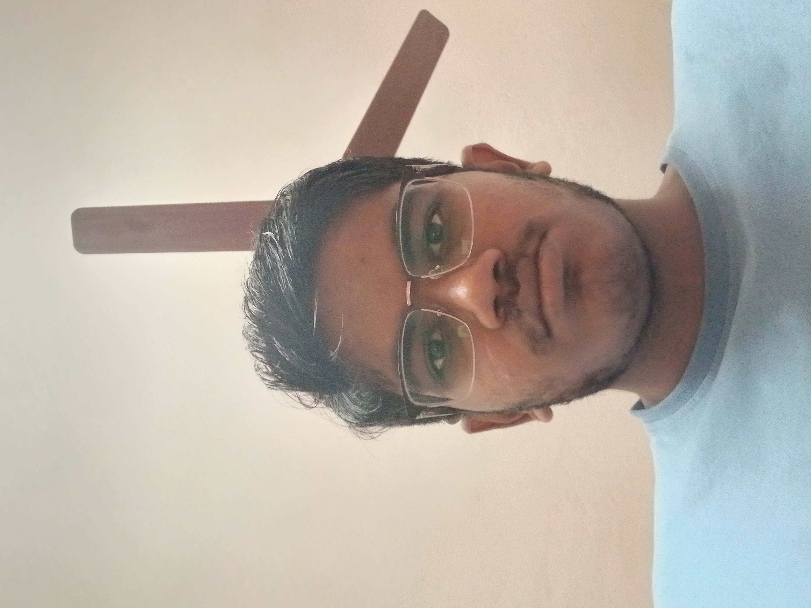

<!DOCTYPE html>
<html class="no-js" lang="en">
<head>
    <meta charset="UTF-8">
    <meta name="viewport" content="width=device-width, initial-scale=1.0">
    <title>Chanakya's personal website</title>
</head>
<body>
    
</body>
</html>
<head>

    <!--- basic page needs
    ================================================== -->
    <meta charset="utf-8">
    <title>Chanakya's personal website</title>
    <meta name="description" content="">
    <meta name="author" content="">

    <!-- mobile specific metas
    ================================================== -->
    <meta name="viewport" content="width=device-width, initial-scale=1">

    <!-- CSS
    ================================================== -->
    <link rel="stylesheet" href="css/styles.css">
    <link rel="stylesheet" href="css/vendor.css">

    <!-- script
    ================================================== -->
    <script defer src="js/vendor/fontawesome/all.min.js"></script>

    <!-- favicons
    ================================================== -->
    <link rel="apple-touch-icon" sizes="180x180" href="apple-touch-icon.png">
    <link rel="icon" type="image/png" sizes="32x32" href="favicon-32x32.png">
    <link rel="icon" type="image/png" sizes="16x16" href="favicon-16x16.png">
    <link rel="manifest" href="site.webmanifest">

</head>

<body id="top" class="ss-preload">


    <!-- preloader
    ================================================== -->
    <div id="preloader">
        <div id="loader"></div>
    </div>


    <!-- header
    ================================================== -->
    <header class="s-header">
        <div class="row s-header__nav-wrap">
            <nav class="s-header__nav">
                <ul>
                    <li class="current"><a class="smoothscroll" href="#hero">Home</a></li>
                    <li><a class="smoothscroll" href="#about">About</a></li>
                    <li><a class="smoothscroll" href="#resume">Education</a></li>
                    <li><a  href="contact.html">Message me</a></li>
                </ul>
            </nav>
        </div> <!-- end row -->
        
        <a class="s-header__menu-toggle" href="#0" title="Menu">
            <span class="s-header__menu-icon"></span>
        </a>
    </header> <!-- end s-header -->


    <!-- hero
    ================================================== -->
    <section id="hero" class="s-hero target-section">

        <div class="s-hero__bg rellax" data-rellax-speed="-7"></div>

        <div class="row s-hero__content">
            <div class="column">

                <div class="s-hero__content-about">

                    <h1>I'm Chanakya Kolluri.</h1>

                    <h3>
                    I'm a  <span>student </span>,pursueing <span>MBIPC</span> studying in <span>Silver Oaks International School</span> 
                    I am preparing for <span>NEET</span> to pursue <span> Neurosurgery or Cardiology</span>Let's <a class="smoothscroll" href="#about"> scroll</a>
                    and learn more <a class="smoothscroll" href="#about">about me</a>.
                    </h3>

                    <div class="s-hero__content-social">
                      
                        <a href="#0"><i class="fab fa-twitter" aria-hidden="true"></i></a>
                        <a href="https://www.instagram.com/chanakyakolluri/"><i class="fab fa-instagram" aria-hidden="true"></i></a>
                    <a href="https://www.linkedin.com/in/chanakya-kolluri-338693323/"><i class="fab fa-linkedin" aria-hidden="true"></i></a>
                    </div>

                </div> <!-- end s-hero__content-about -->

            </div>
        </div> <!-- s-hero__content -->

        <div class="s-hero__scroll">
            <a href="#about" class="s-hero__scroll-link smoothscroll">
                <span class="scroll-arrow">
                    <svg xmlns="http://www.w3.org/2000/svg" width="24" height="24" viewBox="0 0 24 24" style="fill:rgba(0, 0, 0, 1);transform:;-ms-filter:"><path d="M18.707 12.707L17.293 11.293 13 15.586 13 6 11 6 11 15.586 6.707 11.293 5.293 12.707 12 19.414z"></path></svg>
                </span>
                <span class="scroll-text">Scroll Down</span>
            </a>
        </div> <!-- s-hero__scroll -->

    </section> <!-- end s-hero -->


    <!-- about
    ================================================== -->
    <section id="about" class="s-about target-section">

        <div class="row">
            <div class="column large-3 tab-12">
                
            </div>
            <div class="column large-9 tab-12 s-about__content">
                <h3>About Me</h3>
                <p>
                    Welcome to my corner of the internet! My name is Chanakya ,and I'm currently a student at Silver Oaks International School. As an commendable  reader, you can often find me lost in the pages of a good book, exploring different worlds and expanding my knowledge.
                    Sports are ingrained in my life., from tennis to my current passion, basketball. The thrill of the game and  keeps me energized and focused.
                    I enjoy diving into the virtual worlds of video games. Whether it's racing through the stunning landscapes of Forza Horizon 5, embarking on adventures in Far Cry 6, or taking to the skies in Microsoft Flight Simulator, gaming provides me with an outlet for creativity and exploration.
                    Beyond my leisure pursuits, I harbor ambitious aspirations of becoming a neurologist. The complexities of the brain fascinate me, and I am driven to contribute to advancements in understanding and treating neurological conditions.
                    Tech also holds a special place in my heart, as I am a tech enthusiast. From the latest gadgets to emerging technologies, I love staying informed and exploring the endless possibilities that the digital realm offers.
                </p>

                <hr>

                <div class="row s-about__content-bottom">
                    <div class="column w-1000-stack">
                        <h3>Contact Details</h3>
    
                        <p>
                        Chanakya Kolluri <br>
                        Neet aspirant  <br>
                        Hyderabad,Telangana, India   <br>
                        <a href="tel:+91 999">+91 999</a> <br>
                        <a href="mailto:Kollurichanakya@yahoo.com">Kollurichanakya@yahoo.com</a>
                        </p>
                        
                    </div>
                    <div class="column w-1000-stack">
                        <a href="#0" class="btn btn--download">
                            <svg xmlns="http://www.w3.org/2000/svg" width="24" height="24" viewBox="0 0 24 24" style="fill:rgba(0, 0, 0, 1);transform:;-ms-filter:"><path d="M12 16L16 11 13 11 13 4 11 4 11 11 8 11z"></path><path d="M20,18H4v-7H2v7c0,1.103,0.897,2,2,2h16c1.103,0,2-0.897,2-2v-7h-2V18z"></path></svg>
                            Download CV
                        </a>
                    </div>
                </div>
            </div>
        </div> <!-- end row -->

    </section> <!-- end s-about -->


    <!-- resume
    ================================================== -->
    <section id="resume" class="s-resume target-section">
        
        
                </div> <!-- end resume-block -->
            </div>
        </div> <!-- s-resume__section -->


        <div class="row s-resume__section">
            <div class="column large-3 tab-12">
                <h3 class="section-header-allcaps">Education</h3>
            </div>
            <div class="column large-9 tab-12">
                <div class="resume-block">

                    <div class="resume-block__header">
                        <h4 class="h3">Silver Oaks International School Bachupally</h4>
                        <p class="resume-block__header-meta">
                            <span>Grade 11-12 MBIPC</span> 
                            <span class="resume-block__header-date">
                                2024-2026
                            </span>
                        </p>
                    </div>

                    <p>
                        At Silver Oaks International School, Bachupally, I am pursuing MBiPC, a specialized stream focusing on Mathematics, Biology, Physics, and Chemistry. This combination of subjects not only sharpens my analytical and problem-solving skills but also deepens my understanding of life sciences, essential for my ambition to excel in the NEET UG examination. My schooling here emphasizes both academic rigor and a holistic approach to learning, preparing me for the challenges of a medical career while nurturing my curiosity and dedication to achieving my goals.
                    </p>

                </div> <!-- end resume-block -->

                <div class="resume-block">

                    <div class="resume-block__header">
                        <h4 class="h3">Shikhara Shool Bowrampet</h4>
                        <p class="resume-block__header-meta">
                            <span>Grade 7-10</span> 
                            <span class="resume-block__header-date">
                                2020-2024
                            </span>
                        </p>
                    </div>

                    <p>
                        I completed my 7th to 10th grade at Shikhara School, Bowrampet, achieving nearly 85% in my board examinations. During my time there, I embraced leadership roles, serving as the vice-captain for a school house and actively participating in the school government elections. I was also the group leader for my house in both 9th and 10th grade, where I took charge of various activities and represented my peers. My journey at Shikhara was enriched with opportunities to develop my presentation skills and creativity, including organizing and performing in skits and other collaborative projects.
                    </p>

                </div> <!-- end resume-block -->
                <div class="resume-block">

                    <div class="resume-block__header">
                        <h4 class="h3">Sri Vidyanjali School Vivekananda Nagar</h4>
                        <p class="resume-block__header-meta">
                            <span>Grade 1-7</span> 
                            <span class="resume-block__header-date">
                                2014-2020
                            </span>
                        </p>
                    </div>

                    <p>
                    I attended Sri Vidyanjali School from grades 1 to 6, where my journey as a learner began. The school played a pivotal role in igniting my curiosity about the world and transforming me into an eager and engaged student. It was here that I developed a profound interest in reading, which continues to shape my academic and personal growth. The foundational years at Sri Vidyanjali instilled in me a love for knowledge and a thirst for exploration that I carry forward into all aspects of my education.
                    </p>

                </div> <!-- end resume-block -->
            </div>
        </div> <!-- s-resume__section -->


        <div class="row s-resume__section">
            <div class="column large-3 tab-12">
                <h3 class="section-header-allcaps">Skills</h3>
            </div>
            <div class="column large-9 tab-12">
                <div class="resume-block">

                    <p>
                        I bring a strong set of skills that reflect both my analytical and creative abilities. My aptitude for problem-solving allows me to approach challenges systematically and find effective solutions, whether in academics or real-life situations. I have a keen interest in technology, leveraging it for learning, productivity, and innovative thinking. My love for driving games enhances my focus, precision, and quick decision-making under pressure. Additionally, I excel in handling specific problems with a thoughtful and adaptive mindset, reflecting my ability to tackle tasks with confidence and clarity. These skills, combined with my leadership and academic background, shape me into a well-rounded individual prepared to take on future opportunities.
                    </p>

                    

                </div> <!-- end resume-block -->

            </div>
        </div> <!-- s-resume__section -->

    </section> <!-- end s-resume --> 
    
    <!-- footer
    ================================================== -->
    <footer class="s-footer">
        <div class="row">
            
    <div class="column large-7 medium-6 w-1000-stack ss-copyright">
                <span>© Copyright Ceevee 2021</span> 
                <span>Design by <a href="https://www.styleshout.com/">StyleShout</a></span>
            </div>
        </div>

        <div class="ss-go-top">
            <a class="smoothscroll" title="Back to Top" href="#top">
                <svg xmlns="http://www.w3.org/2000/svg" viewBox="0 0 24 24"><path d="M6 4h12v2H6zm5 10v6h2v-6h5l-6-6-6 6z"/></svg>
             </a>
        </div> <!-- end ss-go-top -->
    </footer>


    <!-- Java Script
    ================================================== -->
    <script src="js/plugins.js"></script>
    <script src="js/main.js"></script>

</body>

</html>